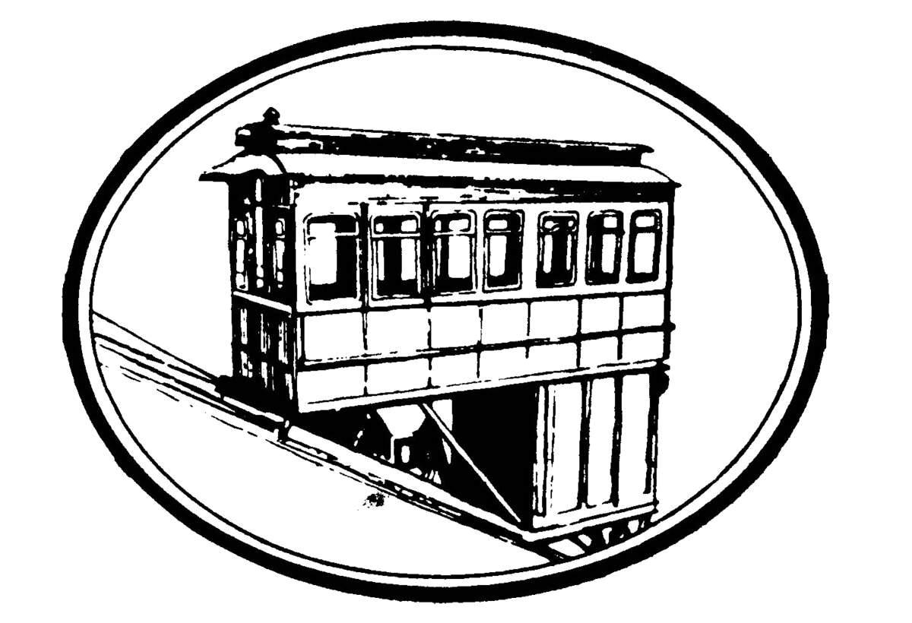
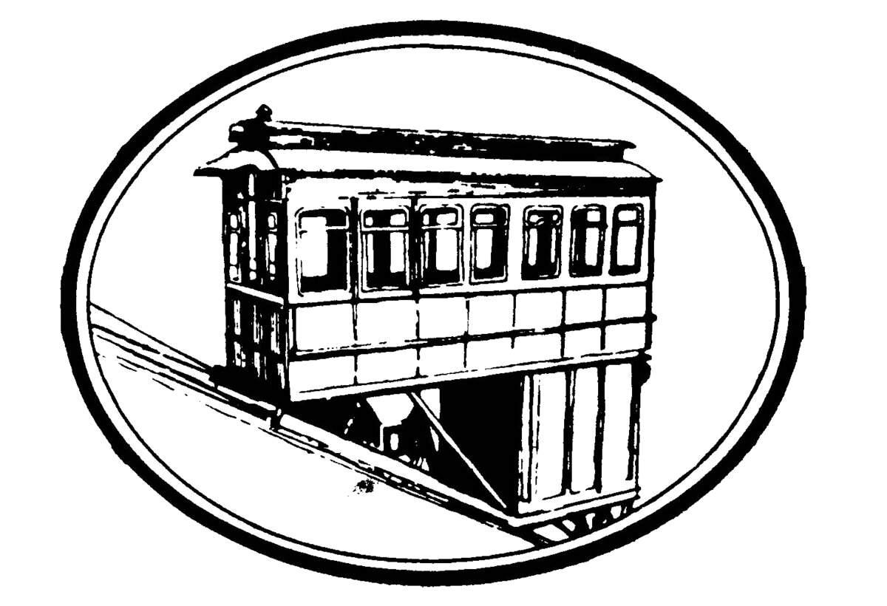

Tour
https://youtu.be/bSLvrz5GraI
Group Rates
For groups of ten or more a free tour of The Duquesne Incline's historic upper station is available.
Adults (Ages 12-64) $1.75 Each Way or $3.50 Round Trip
Children (Ages 6-11) $1.00 Each Way or $1.75 Round Trip
The Tour Includes:
- A pictorial history of Pittsburgh's industry, inclines, sports venues, and natural disasters.
- A visit to the machine room to observe the original hoisting equipment from 1877 in operation.
- A panoramic view of Downtown Pittsburgh from the observation deck 400 feet above the three rivers.
- Also allow time for photos and a visit to our gift shop for post cards and souvenirs.
- Contact Tom Reinheimer at 412-381-1665 or E-mail tomreinheimer@duquesneincline.org for details.
The Field Trip Includes:
A free field trip program is available for students and youth groups of ten or more daily – except Saturdays and Sundays after 12:00 noon due to weekend crowds and limited space.
The program includes:
- A teacher's lesson packet for students' specific grade level
- A round trip ride on the Duquesne Incline
- A history of inclines in Pittsburgh
- A discussion about Pittsburgh's industrial past
The Scout patch program includes:
- A colorful scout patch depicting the incline
- A round trip ride on the Duquesne Incline
- A history of inclines in Pittsburgh
- A discussion about Pittsburgh's industrial past
- A pictorial history of Pittsburgh's industrial past
- A fun quiz to take with you